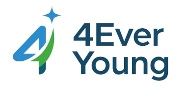

El Destello de tu Próxima Salud.
Atención integral y personalizada para toda la familia, la clave para tu bienestar duradero.

Atención integral y personalizada para toda la familia, la clave para tu bienestar duradero.
Ginecología
Salud integral de la mujer.
Traumatología
Tratamiento de lesiones óseas y musculares.
Odontología
Cuidado avanzado de la salud bucal.
Neurología
Diagnóstico de trastornos neurológicos.
Oncología
Atención especializada contra el cáncer.
Urología
Salud del sistema urinario.
Pediatría
Atención para niños y jóvenes.
Cardiología
Cuidado para el corazón y circulación.
Dermatología
Salud de la piel, cabello y uñas.
Endocrinología
Especialistas en glándulas y hormonas.
Oftalmología
Diagnóstico y cuidado visual.
Cirugía General
Procedimientos quirúrgicos esenciales.


Ser la clínica de referencia en medicina preventiva y estética, fusionando tecnología avanzada con un enfoque humano y personalizado. Creemos que la salud duradera se basa en el equilibrio físico, mental y emocional.
Proporcionar atención médica de la más alta calidad, con programas diseñados a medida que no solo tratan síntomas, sino que optimizan la vitalidad y el bienestar de cada paciente a largo plazo. Tu salud es nuestra prioridad.
¿Tienes dudas sobre una especialidad? Contacta con nuestro equipo para una consulta informativa gratuita.
Hablemos Ahora